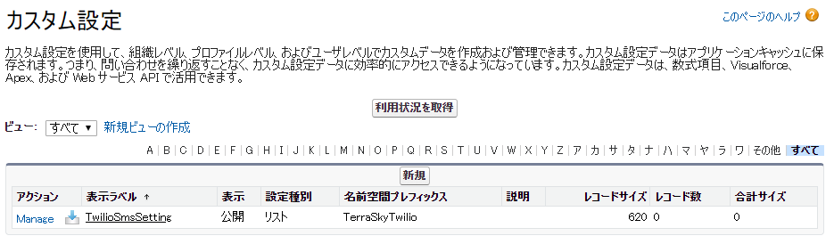
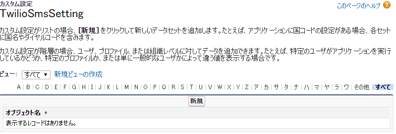
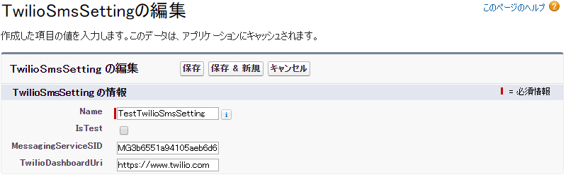
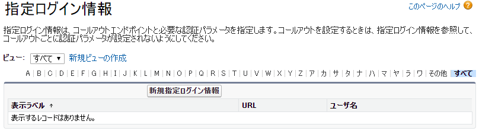
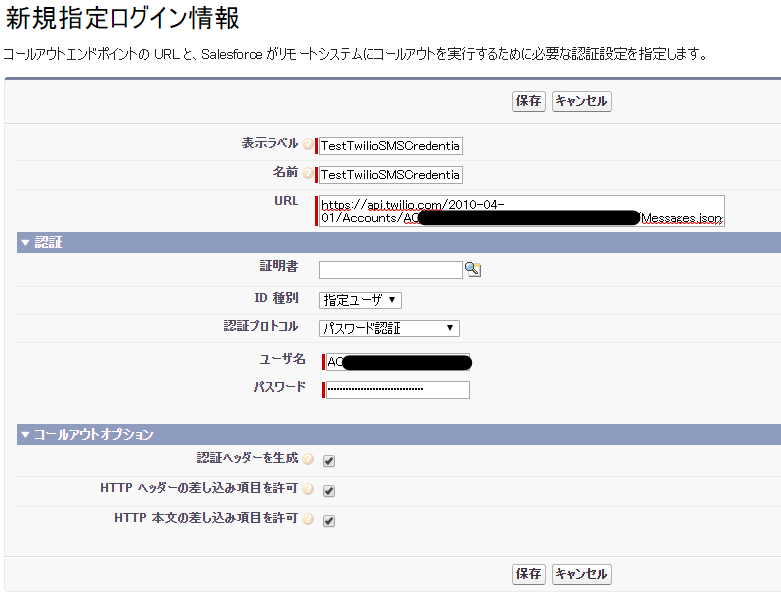
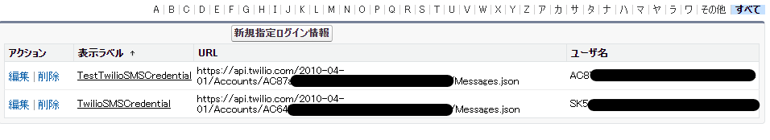

インストール後設定手順
TerraSky-Twilioのインストール後設定手順を説明します。
カスタム設定
カスタム設定のレコードの新規作成
カスタム設定の一覧を表示し、TwilioSmsSettingが存在することを確認します。 新たにレコードを作成するためにManageをクリックします。

レコードを作成するため、新規ボタンを押します。

以下の値を入力し、保存します。

| 項目 | 必須/任意 | 入力内容 |
|---|---|---|
| Name | 必須 | 名前は任意ですが、特定のSMS送信用途に沿った名前にすることを推奨します。 |
| IsTest | 必須 | チェックなしの場合、実際にSMSが送信されSalesforceとTwilioにログが残ります。 チェックありの場合、Twilioのテスト用クレデンシャルを使用し、実際にSMS送信はされずにSalesforceに活動履歴としてログだけが残ります。その際、Twilioにログは残りません。 |
| MessagingServiceSID | 必須 | Twilioで作成したSMSのMessagingServiceSIDを入力します。例：MG***** |
| TwilioDashboardUri | 必須 | 活動履歴のログで使用するため、次のURLを入力します。 https://www.twilio.com |
| StatusCallbackURL | 任意 | SMS送信ステータスをコールバックして書き込むためのTwilio Functionを作成しそのURLを入力します |
Tips
カスタム設定は用途に合わせて複数作成可能です。MessagingServiceを複数作成し、用途によって送信元を変更する事が出来ます。
指定ログイン情報
新規に以下の２つの指定ログイン情報を作成します。
指定ログイン情報|SALESFORCE ヘルプ
| 指定ログイン情報 | 概要 |
|---|---|
| TwilioSMSCredential | 実際にSMS送信が行われる指定ログイン情報 |
| TestTwilioSMSCredential | テスト用クレデンシャルを用いて、実際にSMS送信を行わず結果だけを返す指定ログイン情報 |
指定ログイン情報TwilioSMSCredentialの作成
新規作成するため、新規指定ログイン情報ボタンをクリックします。

指定ログイン情報を作成するため、以下の情報を入力し保存します。

| 項目 | 必須/任意 | 入力内容 |
|---|---|---|
| 表示ラベル | 必須 | TwilioSMSCredential ※固定の名前のため変更しないでください。 |
| 名前 | 必須 | TwilioSMSCredential ※固定の名前のため変更しないでください。 |
| URL | 必須 | https://api.twilio.com/2010-04-01/Accounts/[Account SID]/Messages.json ※[Account SID]にLIVE Credentials ACCOUNT SIDを入力してください。例：AC* Twilio SMS API リファレンス |
| 証明書 | 任意 | 任意となります。 |
| ID 種別 | 任意 | 指定ユーザを選択します。 |
| 認証プロトコル | 任意 | パスワード認証を選択します。 |
| ユーザ名 | 必須 | 作成したTwilio API KeyのSID 例：SK**** |
| パスワード | 必須 | 作成したTwilio API KeyのSECRET |
| 認証ヘッダーを生成 | 任意 | チェック |
| HTTP ヘッダーの差し込み項目を許可 | 任意 | チェック |
| HTTP 本文の差し込み項目を許可 | 任意 | チェック |
指定ログイン情報TestTwilioSMSCredentialの作成
新規作成するため、新規指定ログイン情報ボタンをクリックします。
指定ログイン情報を作成するため、以下の情報を入力し保存します。

| 項目 | 必須/任意 | 入力内容 |
|---|---|---|
| 表示ラベル | 必須 | TestTwilioSMSCredential ※固定の名前のため変更しないでください。 |
| 名前 | 必須 | TestTwilioSMSCredential ※固定の名前のため変更しないでください。 |
| URL | 必須 | https://api.twilio.com/2010-04-01/Accounts/[Account SID]/Messages.json ※[Account SID]にTest Credentials TEST ACCOUNT SIDを入力してください。例：AC* Twilio SMS API リファレンス |
| 証明書 | 任意 | 任意となります。 |
| ID 種別 | 任意 | 指定ユーザを選択します。 |
| 認証プロトコル | 任意 | パスワード認証を選択します。 |
| ユーザ名 | 必須 | Test Credentials TEST ACCOUNT SID 例：AC**** |
| パスワード | 必須 | Test Credentials TEST AUTHTOKEN |
| 認証ヘッダーを生成 | 任意 | チェック |
| HTTP ヘッダーの差し込み項目を許可 | 任意 | チェック |
| HTTP 本文の差し込み項目を許可 | 任意 | チェック |
指定ログイン情報作成後確認
TwilioSMSCredentialと、TestTwilioSMSCredentialが作成されていれば完了です。
